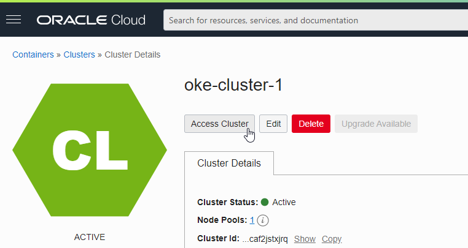
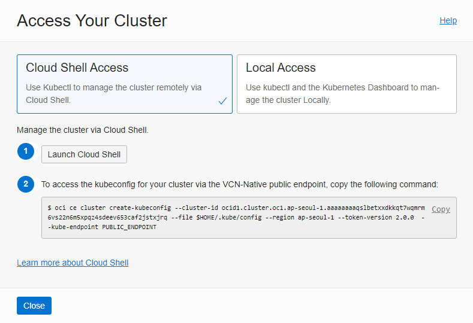
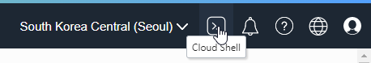
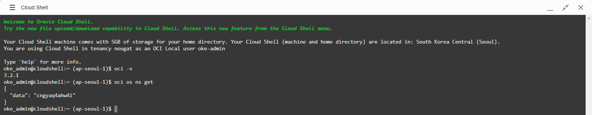
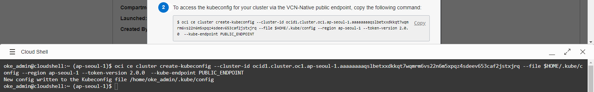
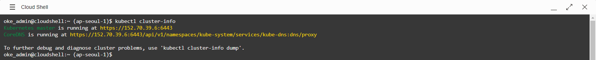

1.3.1 Cloud Shell로 OKE 클러스터 연결하기
Cloud Shell
Cloud Shell은 공식 문서에서 설명하는 것 처럼 Oracle Cloud 콘솔에서 제공하는 웹 브라우저 기반 리눅스 터미널입니다. 작은 가상머신으로 구동된다고 이해하시면 되며, Oracle Cloud 콘솔에 접속한 유저에 대해 사전 인증된 OCI CLI를 제공하며, 추가적인 cli 및 설정들을 기본 구성하여 제공합니다.
OKE 클러스터 접속을 위해 Kubernetes CLI인 kubectl로 기본 설치되어 제공합니다.
무료로 사용할 수 있고, 인증 및 기본 툴 들이 구성되어 있기 때문 바로 사용할 수 있는 이점이 있습니다.
Cloud Shell로 OKE 클러스터 연결하기
-
생성한 OKE 클러스터 상세 페이지로 이동합니다.
-
Access Cluster를 클릭합니다.

-
두 가지 접근 방법 중에 Cloud Shell Access을 선택합니다.
- Cloud Shell: OCI에서 제공하는 Cloud Shell을 통해 접근합니다. 현재 접속한 사용자가 현 OCI Tenacy 환경에 작업하기 위한 기본 설정 및 관련 cli들이 구성되어 있습니다.
- Local Access: 로컬 PC 환경에서 처음 접속하기 위해 필요한 작업부터 시작하는 방법입니다.

-
Step #1. Launch Cloud Shell
Launch Cloud Shell를 클릭하거나, 우측 상단에 있는 링크를 클릭하여 Cloud Shell에 접속합니다.

-
접속한 환경에서 다음 명령을 실행해 보면 oci cli가 설치되어 있으며, 접속이 가능한 상태임을 알 수 있습니다.
oci -v oci os get ns
-
Step #2. kubeconfig 파일 생성하기
생성된 OKE 클러스터 접속을 위한 kubeconfig을 생성하기 위해 Access Your Cluster의 두 번째 단계 내용을 Cloud Shell에서 실행합니다.
- 명령어에서 보듯이 Cloud Shell에서는 Kubernetes API를 Public Endpoint을 제공하는 경우에만 접근할 수 있습니다.

-
OKE 클러스터 연결 확인
kubectl cluster-info를 실행하면 생성된 kubeconfig를 통해 클러스터에 접속됨을 확인할 수 있습니다.
** 이 글은 개인으로서, 개인의 시간을 할애하여 작성된 글입니다. 글의 내용에 오류가 있을 수 있으며, 글 속의 의견은 개인적인 의견입니다. **